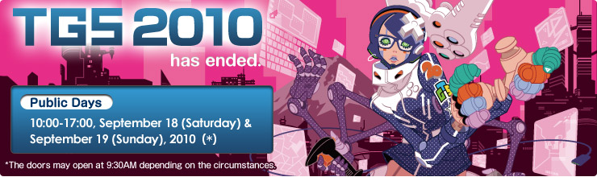

index
09/27/2010
TOKYO GAME SHOW 2010 Summary Report. A Record High of 207,647 Visitors!
09/14/2010
SENSE OF WONDER NIGHT on USTREAM to be live from 18:30-20:50, Sep. 17(Japan Time)!
08/26/2010
SOWN 2010 Announces the 9 presenters!
2010/08/05
일반 공개일 티켓 발매 중!
2010/07/13
TGS is coming on 16th of September!
2010/06/08
The Main Visual Unveiled Expressing the Futuristic View of the Game World, "GAME goes to a new chapter."
2010/04/20
SENSE OF WONDER NIGHT 2010 Entry Now Open
2010/02/26
Outline of TOKYO GAME SHOW 2010
2010/02/26
Call for Speakers at TGS Forum Now Open
2010/02/24
Follow the TGS tweets on Twitter
Back to Top